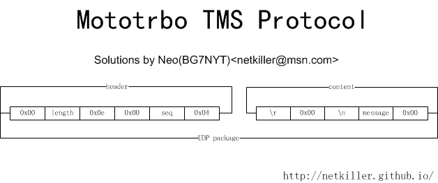

DMR 网络
Mototrbo DMR 实际上就是 TCP/IP网络的延伸。我们可以理解为就是一个TCP/IP网络。
首先Radio ID （八位数字）就是 IP地址的后三位,色码就是IP地址的第一位。例如 12 色码对应IP地址就是 12.0.0.0
色码加上RadioID通过算法就能实现 Radio ID 与 IP 地址的相互转换,组呼可以理解为通过子网掩码控制广播域，在相同子网下的IP地址可以接收组播信息。
代码如下：
class Protocol():
def __init__(self, buffer = None):
self.buffer = buffer
def header(self):
return(self.message)
def message(self):
return(self.message)
def id2ip(self, cai, id):
return (str(cai)+"."+str((id >> 16) & 0xff) +'.'+ str((id >> 8) & 0xff) + '.' + str(id & 0xff));
def ip2id(self, ipaddr):
a, b, c, d = ipaddr.split('.');
return ((int(b) << 16) + (int(c) << 8 ) + int(d))
id2ip 是Radio ID 转 IP 地址，算法如下
(str(cai)+"."+str((id >> 16) & 0xff) +'.'+ str((id >> 8) & 0xff) + '.' + str(id & 0xff))
ip2id 是 IP 地址 转 Radio ID
a, b, c, d = ipaddr.split('.')
((int(b) << 16) + (int(c) << 8 ) + int(d))
判断电台是否开机
数字电台使用的多了，就不想喊CQ了，直接进入通信录，找到朋友，检查状态。如果对方在线就会出现一个绿色的"对号",同时对方也会振铃。
其实我们判断电台是否开机很简单。每个电台都是一计算机终端，色码 + Radio ID 就能算出对方的IP 地址，然后直接 ping 对方的IP地址就可以了。
工具程序地址： https://github.com/netkiller/Mototrbo/blob/master/Mototrbo.py
#直接 ping IP 地址
os.system("ping %s" % self.options.ping)
# ping radio id 需要做一次转换
os.system("ping %s" % protocol.id2ip(int(self.options.cai), int(self.options.online)))
|  |
头部：0x00开始，然后是短信内容的长度，0x0e 0x00 分割，然后是序号,最后是 0x04 结尾 内容：\r回车符,0x00,换行符\n,信息内容，0x00结束,短信的字符集是 utf-16
一条完整短信最终协议包如下：
b'\x00\x14\xe0\x00\x88\x04\r\x00\n\x00B\x00G\x007\x00N\x00Y\x00T\x00'
上面短信的内容就是 BG7NYT
短信发送
class TMS(Protocol):
def __init__(self, buffer = None):
super().__init__(buffer)
self.port = 4007
if buffer :
self.header = self.buffer[:6]
self.message = self.buffer[6:]
def encode(self, msg):
return(msg.encode('utf-16').replace(b'\xff\xfe', b'\x00'))
def decode(self, msg = None):
if msg :
return( msg.replace(b'\x00', b'\xff\xfe', 1).decode('utf-16') )
else:
return( self.message.decode('utf-16') )
def sequence(self):
return(self.header[4:5])
def lenght(self):
return (len(self.message))
def sendtoip(self, ipaddr, sms):
import socket
sock = socket.socket(socket.AF_INET, socket.SOCK_DGRAM) # UDP
message = self.encode(sms)
length = len(message)+7
#print(hex(length))
protocol = b'\x00'+ bytes([length])+ b'\xe0\x00\x88\x04\r\x00\n' + message
#print(protocol)
sock.sendto(protocol, (ipaddr, self.port))
def sendtoid(self, cai, radioid, sms):
ipaddr = self.id2ip(cai, radioid)
self.sendtoip(ipaddr, sms)
def debug(self):
protocol = b'\x00\x14\xe0\x00\x88\x04\r\x00\n\x00B\x00G\x007\x00N\x00Y\x00T\x00'
tms = TMS(protocol)
#print(tms.id2ip(7558888))
#print(tms.ip2id('12.115.86.232'))
#print(tms.ip2id('12.115.86.12'))
#print(tms.ip2id('12.115.52.56'))
#print(tms.ip2id('192.168.11.1'))
#print(tms.id2ip(11012865))
print(tms.message)
print(tms.lenght())
print(tms.encode('BG7NYT'))
print(tms.decode(tms.encode('BG7NYT')))
tmp = TMS(b'\x00\x16\xe0\x00\x83\x04\r\x00\n\x00B\x00e\x00l\x00i\x00e\x00v\x00e\x00')
print(tmp.decode())
print('= Send')
#.replace(b'\x00', b'')
#header = protocol[:6]
#message = protocol[9:]
#print(tms.decode(message))
编码和解码
因为我们目前计算机通常使用UTF-8字符集，所以短信需要编码为 UTF-16 才能发送，否则在终端上看到的是乱码。 同理计算机收到来自电台的短信也需要解码 UTF-16才能阅读。代码如下
def encode(self, msg):
return(msg.encode('utf-16').replace(b'\xff\xfe', b'\x00'))
def decode(self, msg = None):
if msg :
return( msg.replace(b'\x00', b'\xff\xfe', 1).decode('utf-16') )
else:
return( self.message.decode('utf-16') )
短信的发送
发送短信很简单,通过色码 + Radio ID 计算出对方的IP地址。UDP协议与对方IP地址建立连接，然后发送,代码如下：
def sendtoip(self, ipaddr, sms): import socket sock = socket.socket(socket.AF_INET, socket.SOCK_DGRAM) # UDP message = self.encode(sms) length = len(message)+7 #print(hex(length)) protocol = b'\x00'+ bytes([length])+ b'\xe0\x00\x88\x04\r\x00\n' + message #print(protocol) sock.sendto(protocol, (ipaddr, self.port))
程序运行后对方的电台就会收到你的短信。
到此为止，我也曾经尝试分析 ARS，LRRP ......等等协议，很想实现ARS将GPS坐标抓出来，放到地图上，实现aprs.is那样的功能。 逆向工程太复杂，放弃了。
相关软件：https://github.com/netkiller/Mototrbo